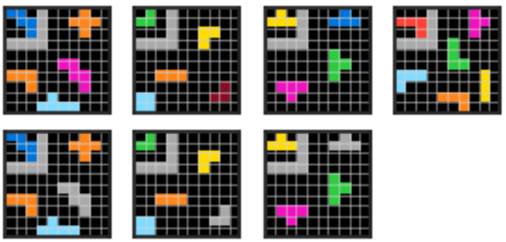

The ARC Challenge
Build a model $f_{\theta}(X, p) = Y$ that will take as input a support sample of input images $x_i \in X$ and a program $p$ and output _resulting_ images $y_i \in Y$, where $x_i$ and $y_i$ are samples of input/output pairs where the output can be _generated_ by applying $p$ to the input $x_i$ in the pair.
For each training episode $i \in N$ , for a small $N$ is an example of the result of executing a program, such that our model learns to execute arbitrary programs.
This model should be able to:
- utilize hierarchical programs (compositionality)
- execute query, select, and transform operations
- define operatons as neural operators (learned)
- accept new concept words ala NSCL
Model details
Image input
For the input support sample $X$ use a convolution chain that is multi-headed (to accept variable input with minimal transformation to it). The convolution chain is defined by 1 or more conv blocks (TODO: define). A training episode in this context act’s as a batch. The result of this chain will be an embedding per $x_i$.
Grammar
In order to allow possible programs to be extensible (to recognise new colors or operations) the grammar structure should help in explicitly identifying verb, attribute/relation, concept words, such that these can be extracted via rules, as opposed to full natural language.
Examples from the ARC challenge:
| $p_i$ | $X_i, Y_i$ |
|---|---|
do ( crop, select( <max_area>, Canvas), do( recolor, select( <max_area>, Canvas ), query( <color>, Select( <min_area>, Canvas ) ), Canvas ) ) |
 |
do (recolor, relate ( select ( <top_left>, Canvas ), <shape>, Canvas ), <grey>, Canvas ) |
 |
Expanding $p_i$ :
do (
crop,
select(<max_area>, Canvas),
do(
recolor,
select(<max_area>, Canvas),
query( <color>, Select( <min_area>, Canvas ) ),
Canvas
)
)
do (
recolor,
relate (
select ( <top_left>, Canvas ),
<shape>,
Canvas ),
<grey>,
Canvas
)
Some things to note in the program structure:
do(, Object, *param, Canvas) → Canvas, is for transformation operations with the first param indicating the transformselect(, Canvas) → ObjectSet, selects one or more objects with the given attribute. To simplify learning, compound attributes are resolved into a single token, as inmax_areaquery(, Object, Canvas) → , selects an attribute from the specified object found in the canvasrelate(Object, , Canvas) → ObjectSet, selects one or more objects that match the attribute of the given object
In the signature above, words denoted by are ‘unknown’ terminals. They can be “any” word. Practically, the initial chosen embedding size (which is normally derived from the size of a known vocabulary) puts an actual limit.
Since operations, attributes and objconcepts are learned, this is where extensibility of the model comes from. Allowing new operations or concepts to be added without full retraining.
Program parsing
Given the grammar above, program parsing will need to:
- parse concept words (ops, attributes, objconcepts) and embed them (learn embeddings)
- recursively parse the program
- branch (into >1) where needed; when a canvas, select or query requires it
- be able to perform a map operation!
- maintain differentiability w.r.t the visual input
As opposed to NSCL, the explicit program is available, so there is no need to encode the program itself and then attempt to decode it. Most of the work the model needs to do is to ‘select’ and learn the appropriate neural operator, and keep the correct state in the current transformation chain.
Sample Generation
Sample generation implies both generating input images $x_i \in X$ and a viable programmes $p_i \in G$ that can be applied to $x_i$ to generate output images. $G$ represents the grammar from which programmes can be sampled. Sampling a programme from $G$ means selecting a valid set of instructions at random.
Two important problems need to be solved:
- A valid programme doesn’t neccesitate a viable programme: one that reuslts in a change in the input image and that doesn’t produce a null output image. [Add example here]
- A meaningful input image: an input image with enough complexity such that viable programmes are possible and complex programmes are possible.
The space of input images $X$ is determined by #shapes, #colors, placement of shapes, #colors/shape, the size of the grid. The space of sample programmes in $G$ is determined by the depth of the programme. A deep programme nessesarily means more compositionatily.
Sample generation will thus need:
- rejecting programmes that do not create a change or result in a null image
- being able to generate programmes of variyng complexity to enable a curriculum learning approach